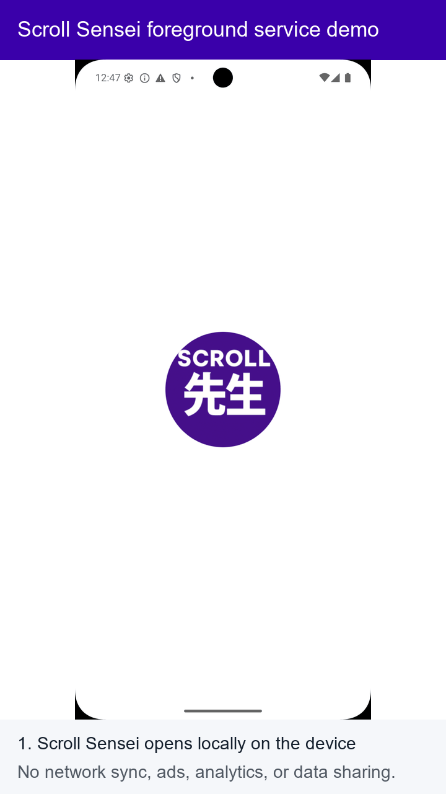

Scroll Sensei Foreground Service Demo
This demo shows how Scroll Sensei uses a user-initiated foreground service for local app-usage monitoring and time-limit reminders.
The app starts monitoring only after the user chooses to start it. While monitoring is active, Scroll Sensei shows a persistent notification and uses Android Usage Access / UsageStatsManager locally to detect selected foreground apps. The app does not sync usage data, show ads, use analytics, or share app usage data.
